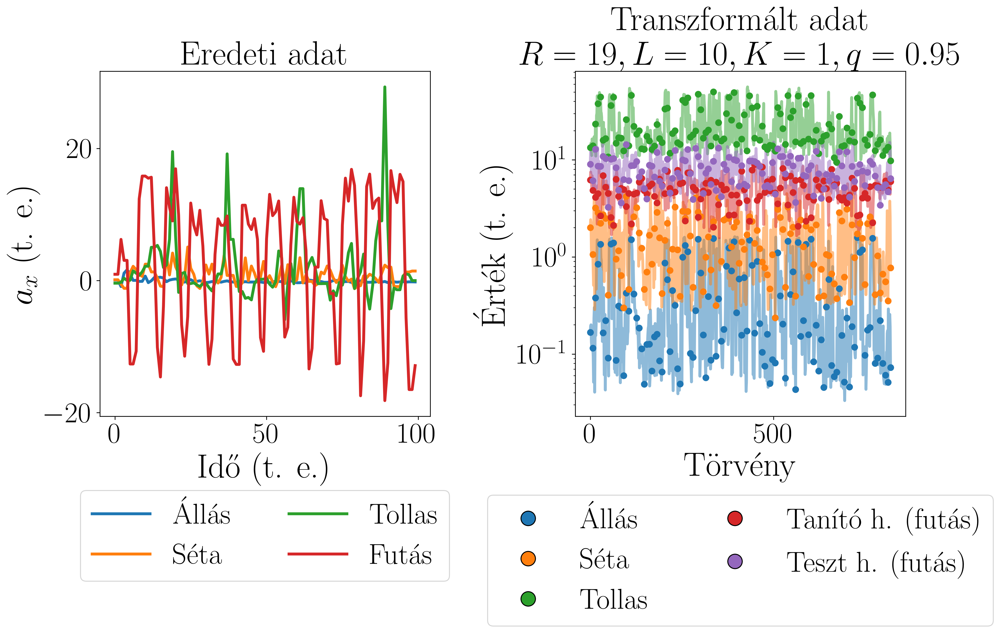
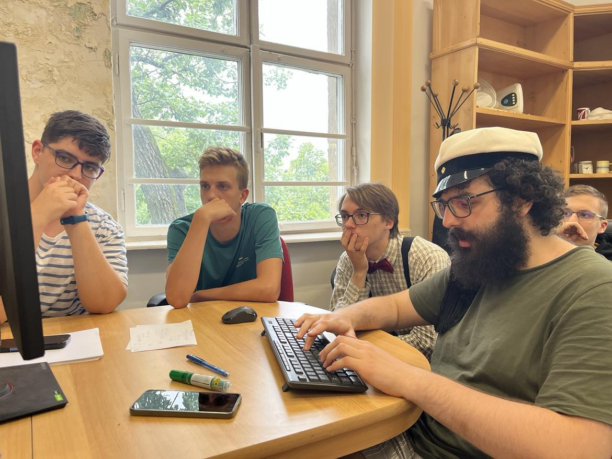
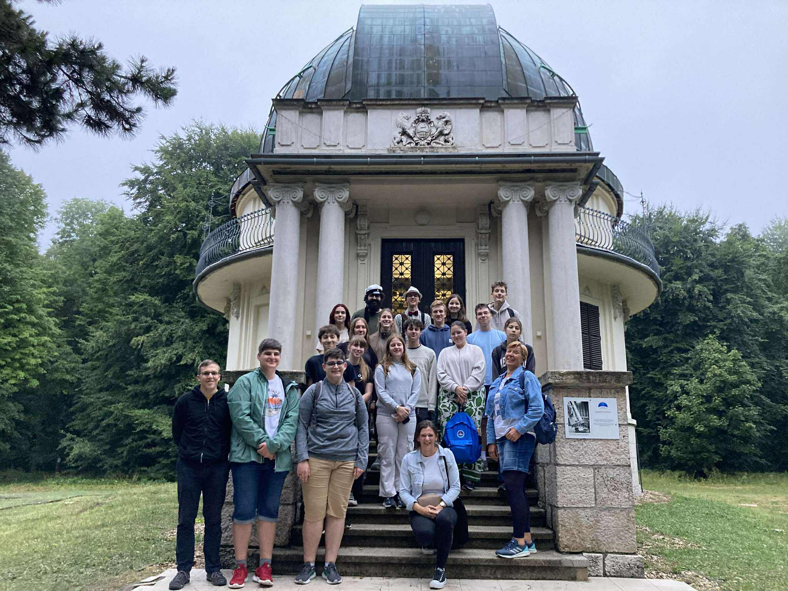

Wigner Summer Camp 2025
The 6th annual Wigner Summer Camp for High Schoolers was organised between 7-11 July, giving opportunity to high school students to get to know a researcher's life and work by participating in a real research project at the institute.
The 13 participating students were selected based on recommendations from their physics teachers. Half of the students were selected from the Budapest area, and half from other cities. Students in pairs or in a group of three got assigned a mentor from the institute's part and with their leadership got to know what the researchers do every day. At the end of the week the students presented their results at a final seminar where the other students, mentors, and the director of the institute could watch the presentations. My personal responsibilities were in connection with the Data and Compute Intensive Sciences Group, where we worked on time series data analysis.
We began with the mathematical foundations needed for our work, including linear algebra, linear recursions, and the TSC (time series classification), accompanied by exercises. Then, we moved on to explaining our method, the ALT, which is for time series classification. After that we did actual research work on anomaly detection, involving reviewing relevant scientific literature and exploring anomaly databases. Next to that, we also tested anomaly detection in previously used TSC-datasets from timeseriesclassification.com and generated syntetic databases.
Finally, the students presented their weekly work at the final seminar. Our main observation was that even though on a normal time-series dataset (for example on BasicMotions) the ALTx-transformed data can mostly be seperated into the respective categories, on a syntetic database we were not able to idenfity one general analysis, as just by changing the hyperparameters, we got to different trends.

ALTx on BasicMotions.Source: WignerCamp2025, GitHub.


Our training materials used in the camp are available on GitHub.
ALT refers to the data transformation method introduced in a recently published article, "Adaptive law-based feature representation for time series classification" (Scientific Reports, 2025).
ALTx refers to the Python package implementation of ALT, introduced in a recently published article, "altx: a python package for adaptive law-based transformation in time series classification" (Machine Learning: Science and Technology, 2026).
Participants: Antal Jakovác, PhD1 (PI); Éva Mária Oláh, PhD1, 2 (PM); Hajnalka Ollé1 (PM); Balázs Paszkál Halmos1, 3 (Co-I); Balázs Hajós1, 4 (Co-I); Vince Áron Molnár1, 3 (Co-I); Levente László Pocsay1, 5 (Co-I).
- HUN-REN Wigner Research Centre for Physics, Data and Compute Intensive Sciences Research Group (Budapest, Hungary)
- HUN-REN Wigner Research Centre for Physics, Institute for Particle- and Nuclear Physics (Budapest, Hungary)
- Tampere University, Faculty of Engineering and Natural Sciences (Tampere, Finland)
- Eötvös Lóránd University, Faculty of Science (Budapest, Hungary)
- University of Applied Sciences Upper Austria, Faculty of Informatics, Communications and Media (Hagenberg, Austria)